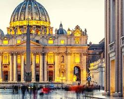

Você conhece a igreja Católica? vamos conhecer está linda igreja!
Vamos começar conhecendo lugares com essa doutrina:
A sede da Igreja Católica, localizada em Roma, Itália. Os fiéis podem visitar a Basílica de São Pedro e o Museu do Vaticano, que tem uma coleção de arte e artefatos religiosos.
Lourdes é um importante local de peregrinação, onde a Virgem Maria teria aparecido a uma jovem em 1858. A cidade recebe milhões de peregrinos todos os anos que procuram cura e consolo espiritual.
Nos primeiros séculos, a Igreja Católica enfrentou muitas perseguições, mas a fé dos cristãos se fortaleceu. Os apóstolos, liderados por Pedro, a quem Jesus confiou as chaves do Reino dos Céus, estabeleceram as bases da Igreja. Concílios ecumênicos foram realizados para definir a doutrina e enfrentar heresias.
-
Notre Dame de Paris, França: Um dos ícones da arquitetura gótica, a Notre Dame sofreu um incêndio devastador em 2019, mas está sendo reconstruída.

-
Catedral de Colônia, Alemanha: Uma das maiores catedrais góticas do mundo, com suas duas torres gêmeas que dominam o horizonte da cidade.

Uma Vida Consagrada à Oração e ao Trabalho:

Após uma juventude marcada pela busca espiritual, São Bento se retirou para uma caverna nas montanhas, onde viveu como eremita por vários anos. Sua fama de santidade atraiu discípulos, e ele fundou o Mosteiro de Monte Cassino, no sul da Itália.
A Regra de São Bento, um conjunto de normas para a vida monástica, se tornou um modelo para inúmeras ordens religiosas ao longo dos séculos. A regra enfatizava a importância da oração, do trabalho manual, da obediência e da vida comunitária. O lema beneditino "Ora et labora" (Ora e trabalha) resume a essência desse modo de vida.
Você decide que o conhecimento é muito complexos e você não tem a coragem de encarrar essas filosofias extremas.
A história do Vaticano está intrinsecamente ligada à história da Igreja Católica. O local onde hoje se encontra o Vaticano era originalmente ocupado por um circo romano. No século IV, o imperador Constantino o Grande construiu uma basílica dedicada ao apóstolo Pedro, que se tornou um importante centro de peregrinação. Com o passar dos séculos, o poder da Igreja cresceu e o Papa se tornou uma figura política influente na Europa. Em 1929, os Tratados de Latrão estabeleceram o Estado da Cidade do Vaticano, garantindo sua independência e soberania.

A Catedral de Notre Dame de Paris é um dos monumentos mais icônicos da França e um dos símbolos mais reconhecidos da arquitetura gótica mundial. Localizada na Île de la Cité, no coração de Paris, a catedral foi construída entre 1163 e 1345 e dedicada à Virgem Maria.
Catedral de Notre Dame:
Ícone da cidade e um dos exemplos mais famosos da arquitetura gótica, a Catedral de Notre Dame, antes do incêndio de 2019, era um ponto de referência para visitantes do mundo todo. Sua reconstrução está em andamento, mas sua imagem continua sendo um símbolo da França.
O Vaticano e Notre Dame de Paris, apesar de suas localizações distintas e papéis específicos, compartilham um elo profundo: a fé católica. Ambos são símbolos poderosos da Igreja Católica e atraem milhões de visitantes anualmente.
Você usou uma máquina de teletranspore e chegou em um país desconhecido que há uma junção das igrejas do Vaticano e da França, com toda a sua fé você se reconecta com o nosso Senhor Jesus.
você segue pela porta à direita, encontra uma imagem de um Santo chamado São Tarcísio conhecido como o Padroeiro dos Coroinhas; Acólitos e Cerimoniários.

O Ato de Fé e o Martírio:
Durante uma dessas missões, Tarcísio foi atacado por pagãos que queriam impedir a distribuição da Eucaristia. Mesmo ferido, ele se recusou a entregar os sagrados elementos, preferindo morrer a trair sua fé. Seus algozes o apedrejaram até a morte, mas ele morreu com um sorriso nos lábios, demonstrando sua alegria por ter dado a vida por Cristo.

Dentro deste país você encontra uma imagem de um novo Santo Católico chamado Beato Carlo Acutis o Padroeiro da Internet a história é a seguinte:
Uma Vida Consagrada a Deus:
Nascido em Londres em 1991 e falecido em 2006, Carlo desde pequeno demonstrou uma fé profunda e um amor especial pela Eucaristia. Ele passava horas pesquisando e catalogando milagres eucarísticos, criando um site para compartilhar suas descobertas com outras pessoas. Carlo também era um jovem alegre e caridoso, sempre disposto a ajudar os outros.
Você percebe que não está preparado para a aventura e resolve volrar para o início.
Retornando e escolhendo a entrada à esquerda, você finalmente vai entar no país perdido e conhecer mais sobre toda essa doutrina.